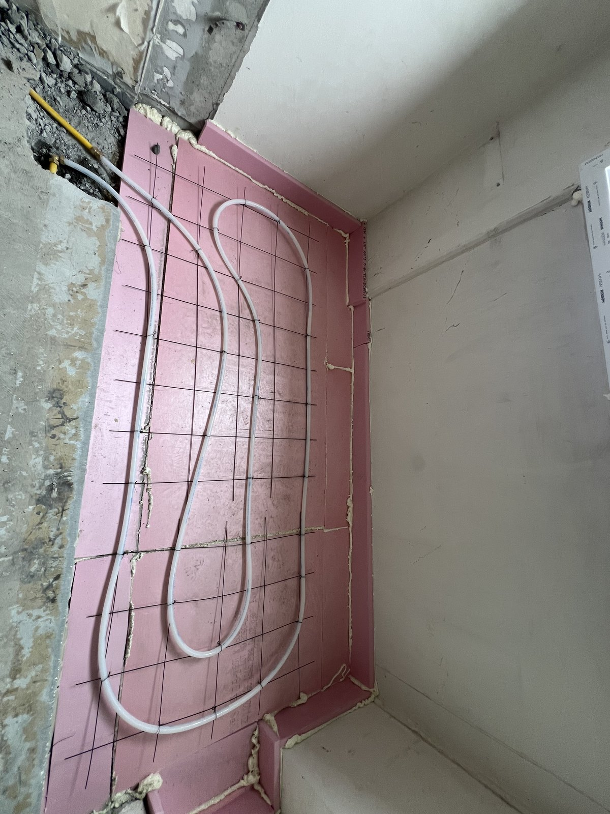
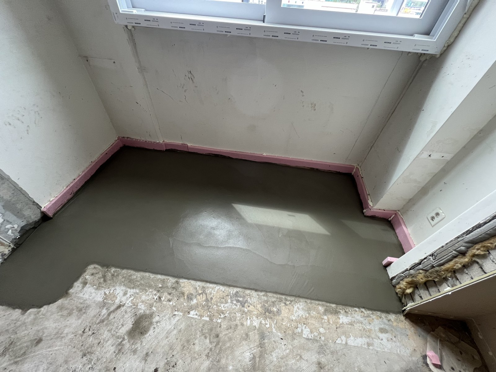

대전 열매마을 욕실 1차 방수와 확장부 미장, 마감 전 두 공간의 작업

열매마을에서 같은 날 진행한 욕실 1차 방수와 거실·방 확장부 미장입니다. 욕실 방수층부터 확장부의 단열재, 난방배관, 미장면으로 이어지는 공정을 소개합니다.
욕실과 확장부, 서로 다른 두 작업
대전 열매마을 현장에서 욕실 1차 방수와 거실·방 확장부 미장을 진행했습니다. 같은 날 작업했지만 공간과 역할은 다릅니다.
먼저 욕실을 보고, 이어서 확장부 바닥 속으로 시선을 옮겨 보겠습니다.
1. 욕실 바닥과 벽 하단 방수
상단 대표 사진이 욕실 1차 방수 모습입니다. 바닥에서 벽 하단으로 이어진 도포 범위와 배관 주변을 볼 수 있습니다.
타일을 붙인 완성 욕실이 아니라 그 아래에 가려질 방수 공정입니다.
2. 확장부 단열재와 난방배관
확장부에는 단열재를 맞춰 넣고 난방배관을 배치했습니다. 아직 미장으로 덮기 전이라 배관의 흐름이 그대로 드러납니다.
욕실 사진과 구분해 거실·방 확장부의 바닥 구성으로 보시면 됩니다.

3. 배관 위를 채운 바닥 미장
다음 사진에서는 난방배관이 모르타르 아래로 가려졌습니다. 미장으로 바닥 높이와 표면을 정리한 모습입니다.
앞 사진과 나란히 보면 배관 배치에서 미장까지 공정이 어떻게 이어졌는지 이해하기 쉽습니다.

마감 뒤에는 보이지 않을 부분들
이번 글에서는 욕실의 1차 방수와 확장부 미장까지 소개했습니다. 최종 타일이나 바닥재를 시공한 모습과는 구분됩니다.
공사 사진은 완성된 공간뿐 아니라 이런 중간 단계도 공간별로 보관해 두면 좋습니다.